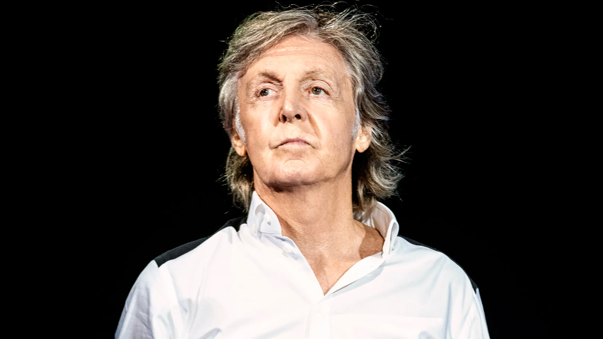

James Paul McCartney é um cantor, compositor, multi-instrumentista,
empresário, produtor musical,
cinematográfico e ativista dos direitos dos animais britânico.
McCartney alcançou fama mundial como membro da banda de rock britânica The Beatles, com John Lennon,
George Harrison e Ringo Starr. Lennon e McCartney foram uma das mais influentes
e bem-sucedidas parcerias musicais de todos os tempos,
"escrevendo as canções mais populares da história do rock".